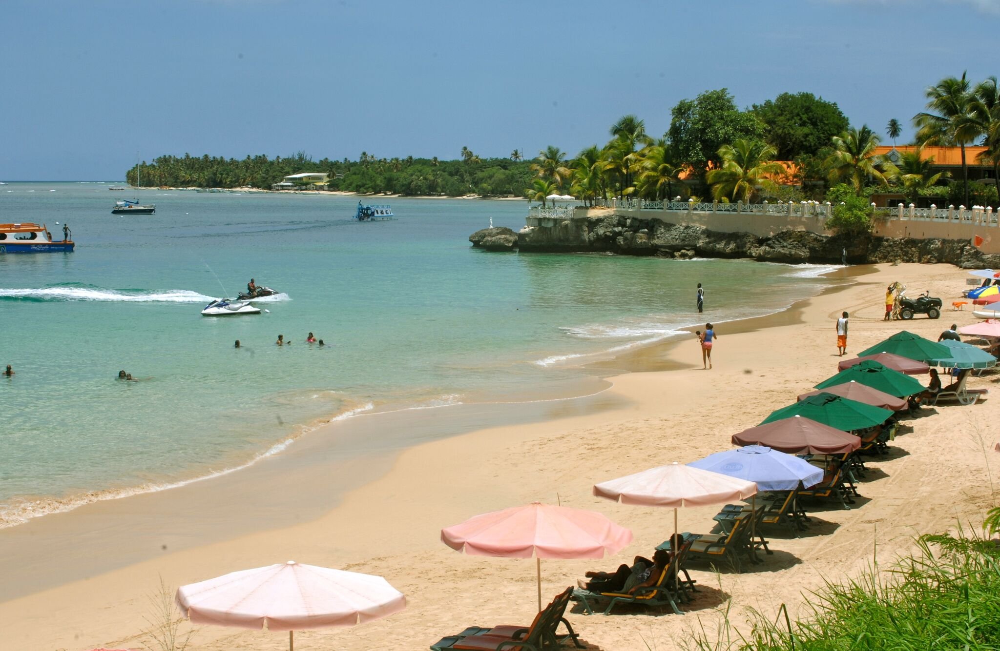

Store Bay
One of Tobago’s most popular beaches, Store Bay is a hub that offers a wide variety of diversions to satisfy almost every taste. The beach delivers a full complement of amenities, from lifeguards and restroom services, to a craft market and food court that serves up delicious local dishes, including the island’s trademark curried crab and dumpling. Activities range from jet skiing to glass bottom boat tours and the bay’s calm water provides ideal swimming conditions. Store Bay is also the venue for the Great Race speed boat events, which attracts thousands of spectators each year. The beach is close to the A.N.R. Robinson International Airport. Visitors can enjoy the clear Caribbean water , and local food. And lastly, remember to protect yourself from the sun.
